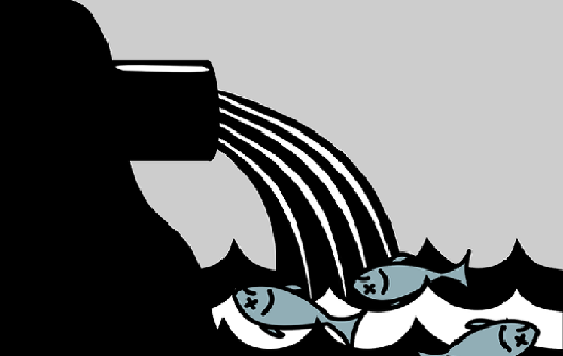
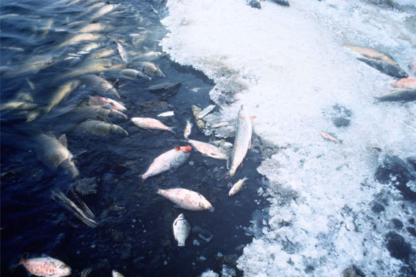
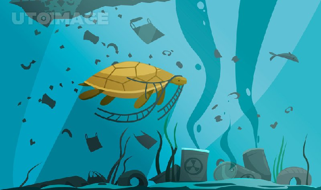
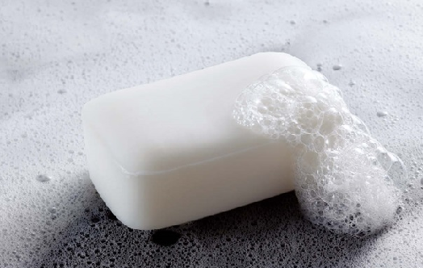
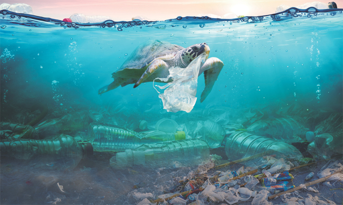

수질 오염이란?

수질 오염은 가정에서 쓰고 버린 생활 하수, 공장에서 나오는 공장
폐수, 농촌의 농 · 축산 폐수 등이 정화되지 않고 하천이나 호수로
배출되어 물이 오염되는 것을 말합니다.
물은 스스로 어느 정도의 오염 물질을 정화할 수 있는 능력을 가지고
있으나, 수질 오염은 물이 정화 능력을 상실할 정도로 오염된 상태임을
뜻합니다.
떼죽음

물이 오염되면 악취가 나며 물고기들이 떼죽음을 당합니다.
공장 폐수를 통해 흘러나온 수은, 납, 카드뮴 등과 같은 중금속이
먹이사슬을 따라 물고기들에게 쌓이게 되며
뿐만 아니라, 그 물고기를 먹는 포식자의 몸에도 점점 쌓이게 되어
해양 생태계를 망가뜨릴 수 있습니다.
바다 쓰레기

공장 폐수와 더불어, 바다 해안가에 바다 쓰레기를 무분별하게 버려
해안 동물들이 쓰레기에 몸이 걸리거나 다치며
또한 무분별하게 바다 쓰레기를 섭취하는 동물들이 늘어나면서 바다
동물들에게 커다란 위협이 되고 있습니다.
수질 오염을 해결하기 위한 우리의 노력
1. 가급적 샴푸 대신 비누 사용하기

샴푸에 들어있는 성분 중 하나인 계면활성제는 물과 기름이 섞이지
않게 도와주는 성분으로 환경 오염에 큰 영향을 미칩니다.
그래서 비누를 사용함으로써 어느정도 수질오염 방지에 도움이 될 수
있습니다.
2. 바닷가에 함부로 쓰레기 버리지 않기
